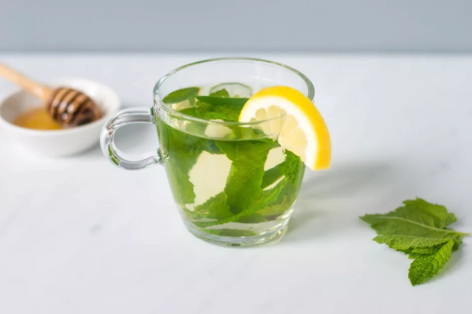

Mint Tea

Description
Fresh mint leaves give this mint tea recipe an alluring herbal aroma and flavor.
Serve it hot or iced, sweetened or unsweetened, and with or without lemon.
It's easy to adjust to your taste and customize to each drinker.
Ingredients
- 2 cups filtered water
- 15 fresh mint leaves (peppermint or spearmint)
- 1 to 2 teaspoons sugar (or honey), optional
- 1 cup ice, optional
- 2 lemon slices, optional
- Fresh lemon juice, optional
Steps
- Bring the water to a boil.
- Remove from the heat and add the fresh mint leaves. Steep for 3 to 5 minutes, depending on desired strength.
- Add optional sweetener. Start with 1 teaspoon per cup and add more as desired.
- If serving iced, fill tall glasses with ice and pour the tea over. If serving hot, pour the tea into mugs. Garnish with optional lemon slices and/or lemon juice to taste.